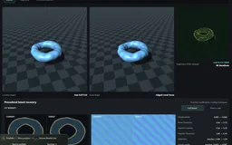
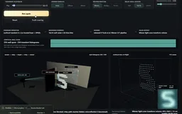

Inverse Render Lab
Three connected inverse problems: reconstruct a 3D shape, separate material from illumination, and image around a corner. Inspect the measurements, solver, and residual to see what each reconstruction actually establishes.
Explore connections
Open the application, then follow what changes
Reconstruct a shape, separate appearance from illumination, or recover a hidden target from indirect measurements. Each inverse problem exposes its forward model, fitting variables and residuals, making it possible to distinguish a convincing image from an identifiable physical explanation.
-
01
Design the capture
Choose calibrated images, depth, illumination codes or transient measurements.
-
02
Choose the unknowns
Specify geometry, material, light or hidden-scene parameters.
-
03
Fit the model
Compare derivative and optimization routes on the measured evidence.
-
04
Challenge the result
Inspect residuals, alternative explanations and information the capture cannot recover.
1. Reconstruct a shape, then challenge the result
What can an image tell us about the scene that produced it? Shape, albedo, roughness, and illumination can compensate for one another, so matching pixels is only the beginning. Three main experiments approach that problem through representation, appearance, and capture. Each puts the measurements beside a computed result and gives the visitor a way to challenge it.
The 3D workspace ray-marches an implicit scene with independently adjustable geometry, appearance, and lighting. Procedural cases add displacement and pigment, a participating-medium shell, or a radial fiber groom. Freezing fine-scale variables creates a concrete ablation: the optimizer can still move the large-scale shape and material, but must leave evidence it cannot reproduce. Selecting different target and candidate representations exposes model mismatch separately from optimizer failure.
Veined mineral core combines ridged surface relief with banded pigment. Opal cloud instead fits a density field with spatial pigment, while Fur ball exposes directional extinction and fiber-lobe parameters. These compact procedural families make different sources of appearance visible; they do not claim general crystal, cloud, or hair reconstruction.
Start with Coral torus and compare Full latent with Macro only: removing displacement and pigment coefficients makes their contribution visible in the residual. Then inspect the capture views. The convergence decision checks RGB and geometry on fitting samples and on a separately rendered inspection view. Pattern search can also use that view to guide appearance, so it is an additional consistency gate rather than an always-held-out generalization test.
2. Separate material from illumination
A highlight might come from surface relief, normal detail, roughness, a discrete facet, or the light itself. The Full Asset workspace makes those competing explanations explicit. It fits fifteen normalized coefficients against controlled RGB, mask, and depth measurements using central finite differences and Adam. The model is a procedural shape with parameterized appearance; it does not claim arbitrary mesh reconstruction or free-form texture recovery.
Choose Bloom with Glints, then compare the PBR, microstructure, and joint fitting scopes. Shape and ordinary material factors cannot explain every part of the discrete-facet target. Freeing microstructure under calibrated lighting, then also freeing the light, changes both the residual and which parameters must be inferred. Factor maps and per-group parameter errors connect the final image back to the quantities being fitted.
Durian and Rose make the geometry–appearance boundary tangible: spines and overlapping petals change the depth surface, while pore and vein normals perturb shading without moving the silhouette. Spatial pigment and roughness create detailed targets inside the same compact forward model used by the inverse. These are stylized procedural specimens; they expose normal, displacement, and material ambiguities without claiming arbitrary scanned-asset recovery.
Continuous GGX, discrete facets, granular response, and anisotropy probe different modeling assumptions. The local sensitivity view measures how image channels respond to each parameter. Anisotropic tangent and roughness symmetries also expose a limitation of local diagnostics: distinct coefficient vectors can describe the same material. A convincing fit must be interpreted with its parameterization and capture conditions.
A paired material-recovery instrument, shared with RIVX, now isolates six bounded unknowns: light angle and power, roughness, bump amplitude, tint and procedural-pattern contrast. It uses matching CPU/GPU equations and accepted residual-tested steps; an immediate mode separates numerical runtime from explanatory animation. The solved scene can become an actual ordinary Rive polygon drawing. This complements the broader inverse workbench with a concrete export experiment; it is not arbitrary texture or mesh recovery.
3. Recover what the camera cannot see directly
The 3D NLOS Scene makes acquisition part of the algorithm. A blocker removes the direct view of the target while indirect light still reaches the sensor through a relay wall. The orbitable scene connects that physical path to raw measurement arrays and to the output the chosen inverse can support.
Pulsed time of flight recovers a 3D albedo-support volume. Wiener Light Cone Transform, filtered backprojection, and f–k migration operate on the same transient evidence, making their assumptions and reconstruction differences comparable. Structured illumination instead measures a transport row through paired Hadamard exposures. Passive edge imaging recovers an angular profile through a calibrated penumbra operator; it has no time-of-flight information to determine depth.
Run a pulsed capture, then switch to Passive edge. The angular uncertainty fan renders the unobserved height and range rather than filling them in with a plausible object. More repeated frames can improve signal-to-noise, but they cannot increase the operator's rank. This is the central connection to the other two experiments: changing the measurement can matter more than changing the optimizer.
Compare the derivative, not just the optimizer name
The smaller 2D renderer compares a handwritten adjoint, a scalar reverse-mode autodiff tape, SPSA, and evolution search from a common estimate. These expose different costs: recording intermediate operations, deriving a backward pass, estimating directions from perturbed renders, or evaluating candidate populations. Loss, gradient, and tape views make those choices visible.
In the 3D solver, parameters are routed to appropriate objectives. Geometry can use silhouette and calibrated-depth consistency, while appearance blocks use image evidence. SPSA perturbs blocks with antithetic pairs; coordinate finite differences probe individual parameters. A damped Gauss–Newton lane instead constructs a residual Jacobian and solves a small regularized system. Evaluation counts describe different kinds of work, so equal iteration counts are not a speed comparison.
The differential-transport workspace isolates a more subtle issue: moving visibility. Its attached path-replay lane intentionally differentiates smooth paths without the moving boundary contribution. Path-space and warped-area lanes include that contribution in different forms. A finite-difference reference, sampled paths, gradient bias and variance, and loss against path-equivalent work let the missing term explain the observed failure. These are controlled micro-integrators with explicit contracts, rather than interchangeable labels on a general renderer.
Smaller experiments explain the main results
The supporting library contains executable experiments with narrower questions. Cloud Inversion extends reconstruction to a nonnegative extinction grid: projection, residual backprojection, coverage normalization, and smoothing recover a volume from calibrated optical-depth evidence. Its single-view depth hypotheses agree from the front and disagree from the side. Gaussian Splatting studies representation growth through a compositing adjoint and clone, split, and prune operations; its fixed-view 2D splats also show why fitting appearance does not establish relightable material.
Capture Physics connects measurement design to material fitting and NLOS through photometric stereo, polarization, transient timing, and HDR response recovery. Visible surface samples, range planes, and exposure patches show what the recovered quantities mean. Layered Materials evaluates three curved material strips under matching light and exposure, turning differences between transport models into visible highlights and attenuation.
Coded image recovery reconstructs actual 32², 64², or 128² angular RGB images of a Ceramic observatory, Botanical alcove, or Sunlit arcade. The actual binary mask and an interactive shifted-pattern diagram explain how directions combine into one sensor exposure. A calibrated periodic mask makes the forward operator an FFT convolution; the inverse receives sensor arrays and calibration alone. Compare image recovery with sensor residual: a slit can fit its measurements while losing elevation, and coarse coding can outperform fine random coding on smooth scenes at finite noise. The original 16² finite-plane examples retain their SVD diagnostics. Both angular models recover directional radiance, with no metric depth.
Depth from coded blur asks a different question using an aperture inside the lens. Actual 256² or 512² photographs support sixteen metric distance estimates across a calibrated 4×4 planar-cell chart. One photograph uses a generic texture prior on the known far side of focus; two focus settings instead constrain a shared unknown sharp image. Both inverses consume measurements and calibration alone. Terraced, sloping, and undulating layouts make distance variation visible, while structured specimens challenge the prior. Cells use independent periodic blur, with no inter-cell transport or dense curved-surface claim. The mask is a fixed random design; flat or weak fits remain unresolved, and score separation expresses confidence within the model.
Experimental Optics asks a separate question: how far away is a target? Two registered, calibrated defocused photographs support a measurement-only distance fit and joint image recovery. Its round, coded, and annular comparison uses actual 256² or 512² captures and reconstructions, with pixel pitch adjusted to preserve sensor width. The original 64² statistical aperture benchmarks stay separate. The recovered distance belongs to one planar target; it is not a depth map of the objects pictured. The 2D optimizer comparison, meanwhile, studies derivatives and optimization on image primitives.
Illustrated guides remain distinct from computed results. The NLOS operator guide computes forward measurements and illustrates expected inverse behavior; Fields + Volumes compares representations, and the Research Atlas supplies references. Surface Extraction compares a fitted SDF slice, its measured marching-tetrahedra mesh, and target geometry under matching camera and neutral shading. For medium and fiber cases, that mesh is the macro SDF scaffold. Sparse reflectance fitting has its own tab. Direct-mesh, Gaussian-surface, and UV-atlas routes are explicitly placed in the Pipeline guide, rather than offered as extra reconstruction algorithms.
Keep numerical work separate from inspection
Worker jobs keep optimization away from the interface, and display resolution is independent of the cheaper working raster. The surface preview uses WebGPU where available, with compute-readback and worker compatibility paths. Heterogeneous media and fibers retain worker transport. Inspection defaults to 512² with optional 768² and display antialiasing; transport previews start at 256² and refine to the selected display size after interaction settles. A separate appearance worker refines to 720×480 at four samples per pixel while optimization keeps its smaller working grid.
Run actions sit beside the experiment choices so the next step is visible before opening detailed controls. Supporting studies preserve a contextual route back to the main investigation. The interface keeps capture, fitting, and display sampling distinct, so a sharper preview is never presented as additional evidence for the inverse.

Recorded examples · 2Recovering scene parametersGoals, residuals and recovered parameters keep the inverse problem visible.＋

Recorded examples · 2Non-line-of-sight reconstructionTwo reconstruction methods interpret the same kind of wall-scan measurement.＋
More recorded views · 1
Current scope
- These are controlled browser inverse problems with specified parameterizations and synthetic evidence; they do not establish unconstrained real-world reconstruction quality.
- The Gaussian fitting lab is 2D and has no 3D covariance or view-dependent spherical harmonics. Some representation-atlas routes remain explanatory illustrations.
- Cloud inversion uses optical-depth measurements. Its two-order scattering display is a surrogate, not a full radiative-transfer inverse; photon differentiation is defined for the selected smooth density kernel.
- WebGPU accelerates the supported surface preview. Optimization and heterogeneous-volume transport retain worker paths; comparative performance still needs measurement on specified hardware and workloads.